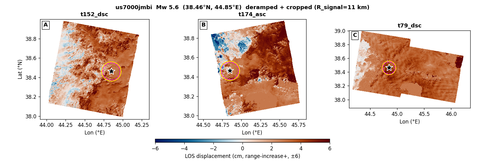
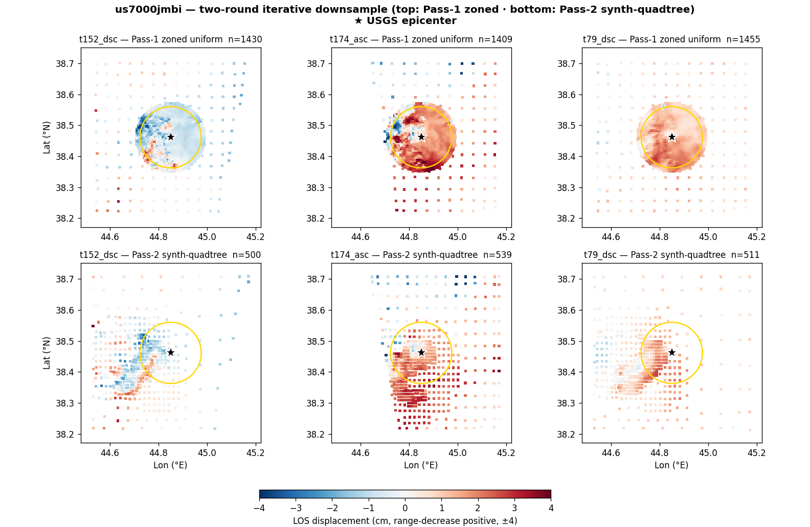
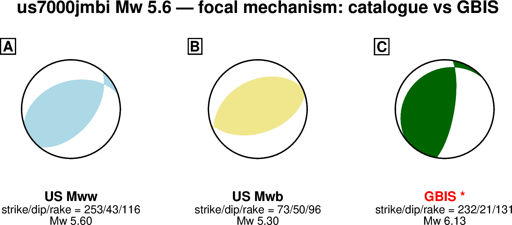
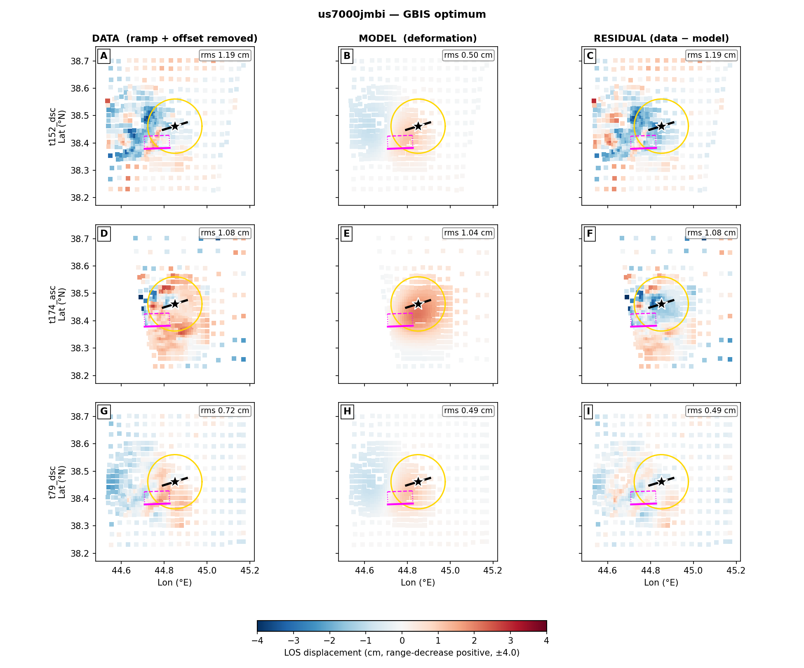
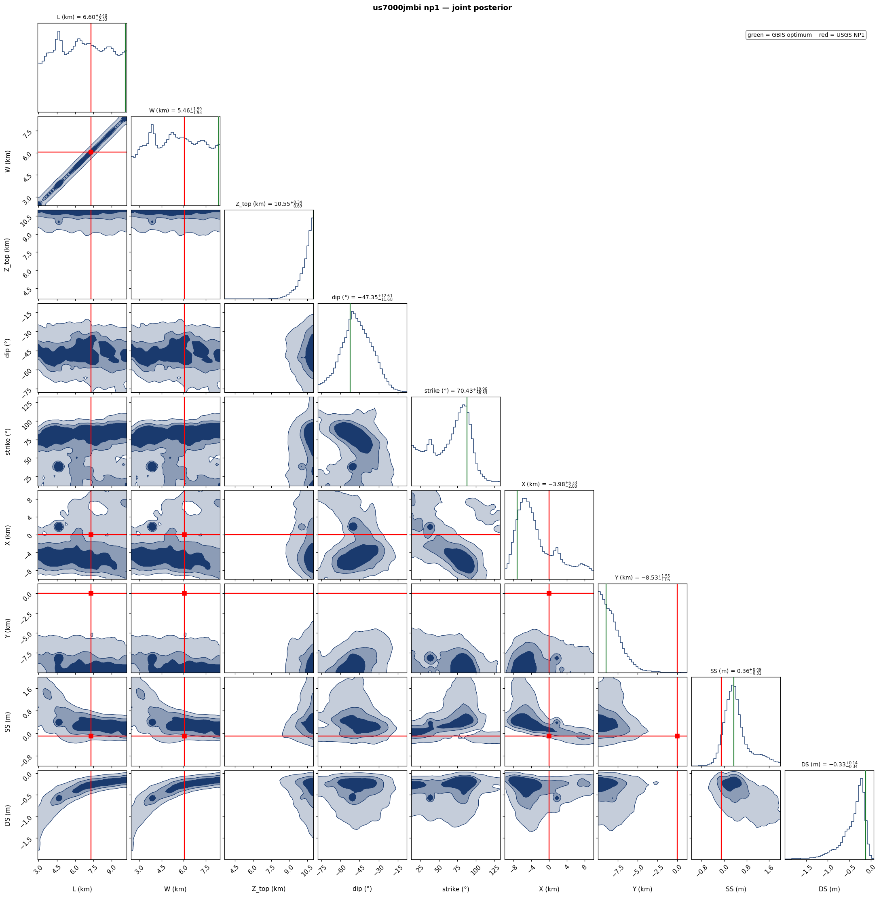
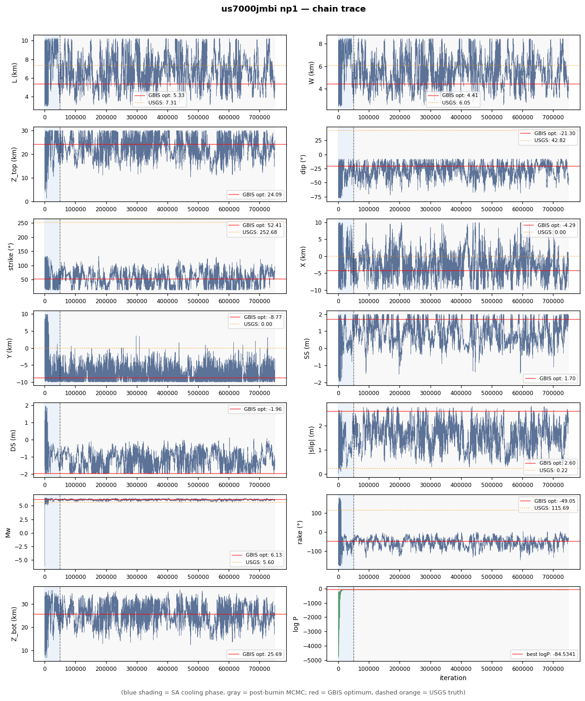

| parameter | start | lower | upper | USGS NP1 / W&C | GBIS optimum |
|---|---|---|---|---|---|
| L (km) | 7.31 | 2.92 | 10.24 | 7.31 | 10.14 |
| W (km) | 6.05 | 2.42 | 8.47 | 6.05 | 8.40 |
| Z_top (km) | 8.94 | 0.10 | 11.00 | 8.94 | 11.00 |
| dip (°) | 42.8 | 7.8 | 77.8 | 42.8 | 52.4 |
| strike (°) | 252.7 | 192.7 | 312.7 | 252.7 | 267.9 |
| X (km) | 0 | -10.0 | 10.0 | 0 | -7.19 |
| Y (km) | 0 | -10.0 | 10.0 | 0 | -9.01 |
| SS (m) | -0.096 | -2.00 | +2.00 | -0.096 | -0.340 |
| DS (m) | +0.199 | -2.00 | +2.00 | +0.199 | +0.129 |
| derived | USGS | GBIS | |||
| |slip| (m) | 0.221 | 0.364 | |||
| rake (°) | 115.7 | 159.2 | |||
| Mw | 5.60 | 5.93 | |||
| Z_bot (km) | 13.06 | 17.66 | |||
| 震源深度 / centroid depth (km) | 11.00 | 14.33 | |||
震源深度对比：USGS = 报告的震源（hypocenter）深度；GBIS = 断层质心深度 (Z_top+Z_bot)/2。
Note: GBIS optimum = single MAP sample reported by GBIS in invResults.model.optimal, NOT a chain median.



Red truth lines = USGS NP1 (W&C scaled). Density contours = 39%, 68%, 95% credible regions.

Blue shading = SA cooling (first 50k iterations). Gray = post-burnin MCMC. Red horizontal = GBIS reported optimum. Dashed orange = USGS NP1 W&C value.